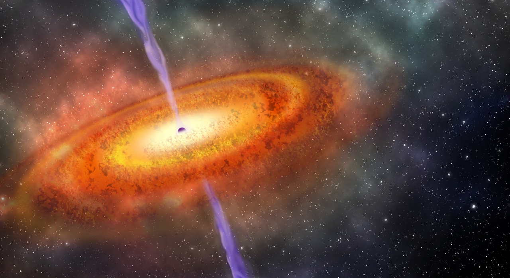

¿Que son los cuasar?
Los cuásares son fenómenos que se cree que surgen cuando un enorme agujero negro, situado en el núcleo de una galaxia, comienza a absorber toda la materia que encuentra en su cercanía. Cuando esto ocurre, por efecto de la enorme velocidad de rotación del disco de acreción formado, se produce una gigantesca cantidad de energía, liberada en forma de ondas de radio, luz, infrarrojo, ultravioleta y rayos X, lo que convierte a los cuásares en los objetos más brillantes del universo conocido.
En un principio se supuso que los cuásares eran agujeros blancos, aunque el avance del estudio de su formación y características ha descartado tal supuesto

En telescopios ópticos, la mayoría de los cuásares aparecen como simples puntos de luz, aunque algunos parecen ser los centros de galaxias activas. La mayoría de los cuásares están demasiado lejos para ser vistos por telescopios pequeños, pero el 3C273, con una magnitud aparente de 12,9, es una excepción. A una distancia de 2440 millones de años luz, es uno de los objetos más lejanos que se pueden observar directamente con un equipo amateur.
Algunos cuásares muestran cambios rápidos de luminosidad, lo que implica que son pequeños, ya que un objeto no puede cambiar más rápido que el tiempo que tarda la luz en viajar desde un extremo al otro. El corrimiento al rojo más alto conocido de un cuásar es de z=7,54 ULAS J1342+0928 aunque recientemente se detecto uno a 7,52 Pōniuāʻena y se estudia si es más lejano aun